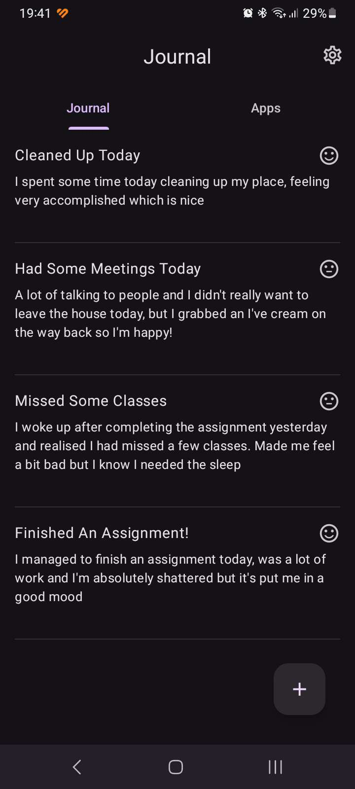
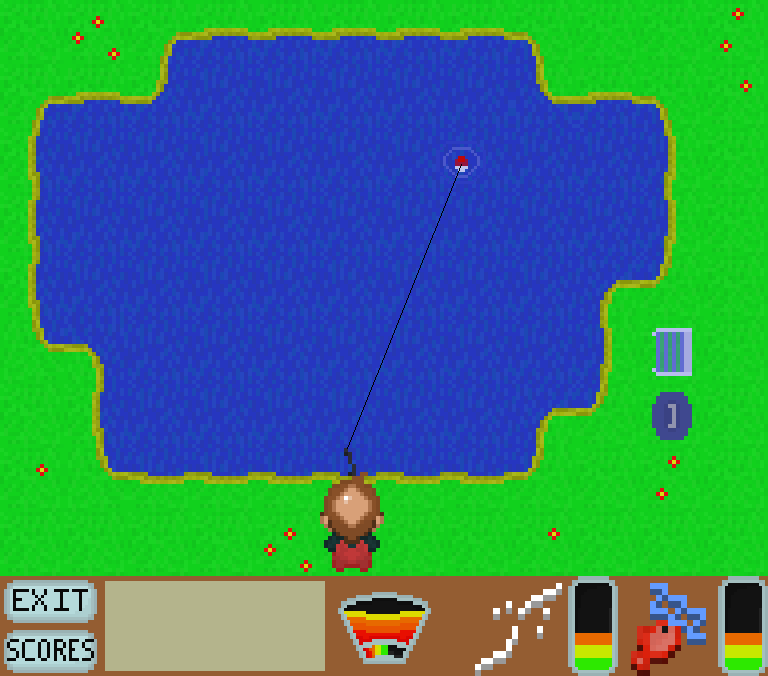
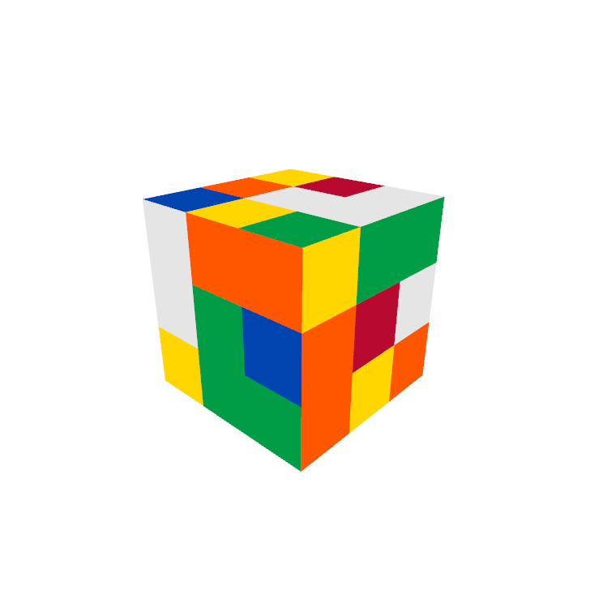

JJournal
JJournal was my Dissertation project at university, it shows a basic proof of concept mobile application with the purpose of being a mood journal that uses a persons app usage data to potentially draw a correlation between that person's mood and what applications they tend to use.
The drawings from the project ended up showing that, while there is evidence to suggest that using some applications while in certain moods was common, there was a struggle to find any evidence to suggest the balance between the applications being used due to a person's mood, and the use of the applications causing a different mood.
Developed Using: Java, Android Studio
Link to Project

File Storage
This was a group project created during my second year of university. Me and one other student were tasked with creating an application that could save files securely over the cloud. With a Docker container acting as the main cloud server, and the file being encrypted and saved in multiple chunks for safer storage.
Developed Using: Java, Docker, SQLite, JavaFX
Link to Project

Fishermun
This project was created as a part of Hacknotts 2021, during my first year of university. It is a simple game about catching different fish.
This project was created in 24 hours from a team of 4, and won 2nd place in the event that year.
Developed Using: Python, Pygame
Link to Project

Rubik's GL
This was one of the final submission during my first year of university, we were only tasked with making a simple C++ program, however I decided to push myself and made a much more complex program.
Rubik's GL was made from my love of solving the rubik's cube, I didn't have the knowledge at the time to get it exactly how I wanted it, but I am still happy with what I did.
Developed Using: C++, OpenGL
Link to Project

2048
This was one of my first university submissions, I recreated the game 2048, receiving a Low 1st grade for the submission.
Developed Using: Python, Pygame
Link to Project